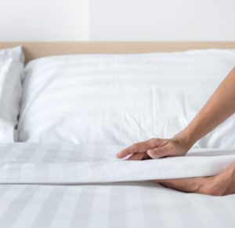

Moving out of a home can be a monumental task filled with packing, organizing, and taking care of last-minute details. One of the most significant challenges during this process is ensuring that your current residence is left in pristine condition. This is crucial not only for reclaiming your security deposit but also for maintaining a good rental history. Professional move-in/out cleaning services, such as Essentials Cleaner, offer efficient solutions to ensure your move is as smooth as possible. Here’s how you can streamline your move-out cleaning and leave your old home spotless.
Plan Ahead
Scheduling Your Cleaning
Proper timing is critical for a stress-free move-out cleaning experience. Ideally, you should book a cleaning service several days before the actual move-out date. This setup allows the cleaners to access every part of your home easily, as most of your belongings will already be packed. Planning your cleaning session ahead of time helps avoid the rush and ensures a comprehensive cleaning that covers all areas thoroughly.
Choose the Right Service
Selecting a Comprehensive Cleaning Package
When selecting a cleaning service, it’s essential to choose one that caters specifically to move-out conditions. A detailed move-out cleaning package should cover all necessary tasks, including:
- Dusting all surfaces and fixtures, such as ceiling fans, blinds, and baseboards.
- Deep cleaning of kitchen appliances both inside and out, including refrigerators, ovens, and microwaves.
- Cleaning out cabinets and drawers.
- Scrubbing sinks, toilets, showers, and bathtubs.
- Mopping floors and vacuuming carpets (note that deep carpet cleaning might require a specialized service).
- Cleaning interior windows, mirrors, and any glass surfaces.
- Addressing areas prone to gathering cobwebs and dust.
Essentials Cleaner ensures that these key areas are meticulously cleaned, meeting the high standards required for move-out inspections.
Communicate Your Needs
Detailing Specific Areas
Clear communication with your cleaning service provider is vital. Before the team arrives, specify any areas in your home that may require special attention. If certain spots have stubborn stains or have been neglected over time, highlight these issues during your initial consultation. This proactive approach helps ensure that the cleaning team is prepared and pays particular attention to these problem areas.
Secure Valuable Items
Protecting Personal Belongings
While professional cleaning companies are generally trustworthy and careful, it is advisable to secure any valuable or delicate items prior to the cleaning session. Doing so not only protects your valuables but also frees up the cleaners to focus on their tasks without the need to handle sensitive items.
Check for Satisfaction Guarantees
Ensuring Quality of Service
Opt for a cleaning service that offers a satisfaction guarantee. This policy means that if you or your landlord are not completely satisfied with the cleaning results, the company will return to address any overlooked areas. This guarantee ensures that you can hand over the keys with confidence, knowing that the property has been thoroughly cleaned.
Consider the Environment
Using Eco-Friendly Products
Choosing a service that uses environmentally friendly cleaning products is beneficial for the environment and safer for people and pets who may have allergies or sensitivities to harsh chemicals. Essentials Cleaner offers eco-friendly cleaning solutions that effectively clean without the use of toxic substances.
Review the Final Product
Conducting a Final Walkthrough
After the cleaning team has finished, conduct a thorough walkthrough of the premises. This final inspection allows you to ensure that everything is up to your standards and that no area has been missed. If there are any issues, most companies are willing to address them promptly.
Conclusion
Navigating the move-out process doesn’t have to be stressful. With careful planning and the support of professional cleaning services like Essentials Cleaner, you can leave your old home in impeccable condition, ensuring a smooth transition to your new space. By selecting a reliable and efficient maid service, you lift the burden of cleaning off your shoulders, making your moving experience smoother and more enjoyable.
Explore more about cleaning services and tips at Essentials Cleaner Blog.
When it comes to cleaning your bedroom, there is nothing quite like a deep clean. A deep clean of your bedroom requires more effort and time than a regular cleaning, and the results are worth it. Not only will your bedroom look and feel better, but your overall wellbeing will improve as well. With this guide, you will learn how to deep clean your bedroom, when to hire a house cleaning service, and how to maintain a clean bedroom.
Introduction to a Deep Clean
A deep clean is a comprehensive cleaning of your bedroom or any other area of your home. It goes beyond the basics of regular cleaning, such as dusting and vacuuming, to include more thorough tasks. A deep clean of your bedroom should include dusting and vacuuming, but it should also include cleaning the windows, washing the curtains and blinds, and cleaning the carpets.
It is important to note that a deep clean is not the same as a spring cleaning. While a deep clean is a thorough cleaning of your bedroom, a spring cleaning is an annual event that involves cleaning the entire home. A deep clean of your bedroom should be done at least once a month, while a spring cleaning is done once a year.
Benefits of a Deep Clean
The most obvious benefit of a deep clean of your bedroom is that it will make your room look and feel better. Dust and dirt can build up over time, and a deep clean can help to remove it. Additionally, a deep clean can help to reduce allergens and other irritants in your bedroom, making it a healthier environment.
Cleaning your bedroom can also help to reduce stress levels. A cluttered and disorganized room can be overwhelming, but a deep clean of your bedroom can help to create a sense of order. This, in turn, can help to reduce stress levels and improve your overall wellbeing.
Preparing to Deep Clean Your Bedroom
Before you begin a deep clean of your bedroom, it is important to take some time to prepare. This will help to ensure that the cleaning process goes smoothly and that you are able to get the most out of the deep clean.
The first step in preparing to deep clean your bedroom is to declutter. Remove any items that are no longer needed or used, and organize the items that are staying. This will make it easier to clean and will help to maximize the effectiveness of the deep clean.
Next, you should gather all of the materials and supplies you will need for the deep clean. This should include a vacuum cleaner, dusting cloths, cleaning products, and any other items that you may need.
How to Deep Clean Your Bedroom
Once you have prepared for the deep clean, you are ready to begin. Start by vacuuming the floors, rugs, and carpets. Pay special attention to the areas that tend to collect dust, such as under the bed and in the corners.
Next, dust all surfaces and furniture. Be sure to dust the ceiling fans, window sills, and any other hard-to-reach areas. Once you have finished dusting, use a damp cloth to wipe down all surfaces.
After that, you can move on to cleaning the windows and window coverings. Vacuum the curtains and blinds, and then use a cleaning product to wash them. For the windows, use a glass cleaner and a lint-free cloth to clean the glass and the frames.
Once the windows and window coverings have been cleaned, it is time to move on to the other areas of the bedroom. Vacuum the mattress and the box spring, and then use a cleaning product to spot clean any stains. Vacuum the furniture, and then use a cleaning product to spot clean any stains or spills.
Finally, mop the floors and vacuum the carpets. Once you have finished, your bedroom should be sparkling clean. If you have tile floors in your bedroom, check out our tips for how to tackle tile floors and grout.
Cleaning Tips for Your Bedroom
When it comes to cleaning your bedroom, there are a few tips that can help make the process easier. First, use a vacuum cleaner with a HEPA filter to remove dust, dirt, and other allergens from the air. This will help to reduce the number of irritants in your bedroom.
Second, use a damp cloth to dust surfaces instead of a dry cloth. This will help to pick up more dust and dirt, and will also help to reduce the amount of dust that is kicked up into the air.
Third, use a mild cleaning product to clean surfaces and furniture. Stronger cleaning products can damage the surfaces and furniture, so it is best to use a gentler product to avoid any damage.
Finally, use a lint-free cloth to clean windows and window coverings. This will help to prevent any streaks or smears from forming.
When to Hire a House Cleaning Service
A deep clean of your bedroom is an intensive process, and it can be difficult to do it on your own. If you are unable to do a deep clean of your bedroom yourself, it may be time to consider hiring a house cleaning service.
House cleaning services can provide a thorough deep clean of your bedroom, and they can do it in a fraction of the time it would take you to do it yourself. Additionally, they can provide a level of cleaning that you may not be able to achieve on your own.
It is important to note that a deep clean of your bedroom is not the same as a regular house cleaning. A deep clean is a more intensive process, and it should be done at least once a month. A regular house cleaning is a less intensive process, and it should be done on a weekly or bi-weekly basis.
How to Find a House Cleaning Service
Finding a house cleaning service can be a daunting task, but it doesn’t have to be. There are a few steps you can take to ensure that you are hiring a reputable and reliable house cleaning service.
First, ask for recommendations from friends, family, and neighbors. They may be able to provide you with the names of reputable house cleaning services in your area.
Second, research the different house cleaning services in your area. Read reviews and check out their websites to get an idea of the services they offer and the quality of their work.
Finally, make sure to ask questions before hiring a house cleaning service. Make sure to inquire about their rates, services, and policies. This will help to ensure that you are getting the best service for your money. With Essentials Cleaner you get quality cleaners backed with a happiness guarantee.
Essential Cleaning Supplies for Your Bedroom
When it comes to deep cleaning your bedroom, there are a few essential cleaning supplies that you will need. These include a vacuum cleaner, dusting cloths, cleaning products, a lint-free cloth, and a mop.
A vacuum cleaner is essential for picking up dust, dirt, and other allergens from the floors and carpets. Dusting cloths are also essential for removing dust from surfaces and furniture.
Cleaning products are also essential for deep cleaning your bedroom. You will need a mild cleaning product for surfaces and furniture, as well as a glass cleaner for the windows.
Finally, a lint-free cloth and a mop are essential for cleaning the windows and the floors. The lint-free cloth will help to prevent any streaks or smears from forming on the windows, while the mop will help to make the floors sparkle.
Tips for Maintaining a Clean Bedroom
Once you have completed a deep clean of your bedroom, it is important to maintain it. This will help to ensure that your bedroom remains clean and organized.
One of the best ways to maintain a clean bedroom is to stay on top of the cleaning. This means vacuuming and dusting on a regular basis, as well as spot cleaning any spills or stains.
Another tip for maintaining a clean bedroom is to declutter regularly. This means getting rid of any items that are no longer needed or used. This will help to keep the bedroom organized and will make it easier to clean.
Finally, it is important to have a cleaning schedule. This will help to ensure that you are staying on top of the cleaning and that your bedroom remains clean and organized.
Conclusion
A deep clean of your bedroom is an important part of maintaining a clean and healthy environment. With this guide, you will learn how to deep clean your bedroom, when to hire a house cleaning service, and how to maintain a clean bedroom. By taking the time to deep clean your bedroom and maintain it, you can improve your overall wellbeing and create a more pleasant living environment.
Did you know that the dirtiest places in your house are probably also the most unassuming? Even though it’s not exactly something you think about, your home is filled with hidden germs and bacteria. These surfaces can be breeding grounds for all kinds of nasty stuff, which is why it’s important to clean them regularly to avoid getting sick. If you’re anything like me, then you might cringe a little bit when thinking about cleaning your house. Perhaps images of bending awkwardly over laundry baskets or scrubbing grimy bathroom tiles come to mind… But don’t worry! Cleaning doesn’t have to be a nightmare. In fact, once you know where germs lurk and how they thrive, keeping things tidy becomes second nature.
Kitchen sink
Your kitchen sink is a breeding ground for bacteria, especially if you forgot to clean it after chopping raw meat on it. The best way to clean your kitchen sink is to use antibacterial spray and hot soapy water. Make sure to scrub the corners and other hard-to-reach areas. You should also clean the faucet regularly. Bacteria can build up under the faucet, which can then drip back into the sink and contaminate your food. If you want to clean the sink quickly and efficiently, use a sponge or scrubber that has disinfectant built in. And if you have children or pets, use kid-friendly cleaners and be sure to clean underneath the sink regularly.
Bathroom sinks
Just like kitchen sinks, bathroom sinks are breeding grounds for bacteria and germs. You should clean them regularly using antibacterial cleanser. In addition to cleaning the surface, you should also check for cracks and holes. If you find any, you should seal them with silicone. To avoid clogging the drain, you should clean the sink regularly. You should also clean the walls and back of the toilet regularly as these are two of the dirtiest areas in the bathroom. You can vacuum them or use a disinfectant cleaning spray.
Shower and tub
Shower walls and tubs are perfect places for bacteria to thrive. Make sure to clean them regularly to avoid getting sick. You can use a scrub brush or a cleaning sponge to clean the walls and floor of the shower and tub. Make sure to use gloves while cleaning the walls and floors to avoid germs getting into your hands. You can also use disinfectant spray to clean your shower. You can also use a squeegee to clean the walls and the floor of your tub after each use.
Toilet bowl
The toilet bowl is one of the dirtiest places in your house. You can disinfect it using bleach and water. To do so, mix a few drops of bleach with water and pour the mixture into the toilet bowl. Let it sit for 30 minutes and then flush the toilet. You can also use disinfectant wipes to clean the toilet bowl. To clean grout between tiles, use bleach and water.
Floor tiles
Carpeted areas are not the only places in your home that bacteria can thrive. Floor tiles are also ideal for bacteria to grow, especially in humid environments, such as bathrooms and kitchens. Taking care of and cleaning your tile flooring doesn’t have to be a huge chore. Wants some tips on tile floor cleaning? Read more in our “How to Clean Tile Flooring” article.
Doors and windowsills
Doors and windowsills are some of the dirtiest places in your house. You can use disinfectant wipes to clean them. You should also regularly clean your closets and drawers as these are also ideal places for bacteria to grow. You should also clean your shoes regularly as these are another ideal place for bacteria to live.
Drying rack for your laundry
Your laundry drying rack is a great place for bacteria to thrive. You should make sure to clean it regularly. You can use bleach to clean it. You can also use disinfectant wipes to clean the drying rack.
Conclusion
Hopefully, this article has helped you recognize the hidden germs and bacteria in your home so you can clean them and keep them out of your life. Remember, these places are ideal for bacteria to thrive, so make sure to clean them regularly to avoid getting sick. One of the best ways you can keep these elusively dirty spots clean is by hiring a home cleaning service. Check out our house cleaning services if you’re look for professional help to keep your house sparkling.
Image Source: FreeImages
House cleaning and home maintenance are time-consuming tasks that most people dislike. It’s easy to put this off and procrastinate, but in the long run, it can lead to a lot of problems and dirtier homes. Homeowners in today’s world are busy with work, kids or other commitments. It is not always feasible for everyone to find the time for daily upkeep of their house or apartment. This is why hiring a house cleaning company is a viable option for many people.
Finding a Good Company
When you start the process of hiring a house cleaning company, you will want to make sure you find a reputable company. How do you go about finding a trustworthy house cleaning service? Ask around. Does anyone you know use a house cleaning service? You can ask them for recommendations and read reviews online. Make sure the company uses environmentally friendly products. You don’t want harsh chemicals around your family or pets. Find out what types of customers the company usually serves. If you are hiring a house cleaning service with a special focus, such as an eco-friendly cleaning service, you want to make sure they follow through with that.
How Often Should You Hire a House Cleaning Service?
House cleaning should be done regularly and at least once a month. If you have kids or have frequent visitors, you might want to schedule more frequent cleanings. If you have a large house or an office, you can hire a cleaning service once every two months. However, cleaning your house regularly will save you a lot of time and money in the long run. You can also look at hiring a house cleaning company for other special occasions, too, like before you host a big party or do an outdoor barbecue, or when you’re going on vacation so you can come home to a freshly cleaned house. You can hire a house cleaning company for these events, too, but keep in mind that you may have to pay a premium for their services since they will probably be busier than usual.
What to Look For in a Good House Cleaning Company
There are many things to consider when hiring a house cleaning company. The cost of the service is a major factor, of course. You will also want to look at their reputation and customer satisfaction. Make sure they have workers that are properly trained and certified. In addition, you will also want to make sure they have a history of providing excellent service. What is the turnaround time for the company? How does their cleaning process work? You will want a company that can get your cleaning done quickly and efficiently so you don’t have to wait a long time for house cleaning appointments.
Pros of Hiring a House Cleaning Company
- You don’t have to bother with cleaning supplies or what products to use.
- You don’t have to bother with finding a reliable cleaning crew.
- You can hire a company that specializes in a certain type of cleaning.
- You can hire a company that cleans your house when you don’t have the time.
- You can schedule regular cleanings so you don’t have to worry about cleaning your house regularly.
- You can have a clean house without having to put in a lot of effort.
Cons of Hiring a House Cleaning Company
- You have to pay a cleaning company a fee.
- You may have to wait for the cleaning crew to show up.
- You may have to deal with scheduling conflicts if you have a regular cleaning service come to your house.
- The cleaning company may miss something or not clean thoroughly in certain areas.
- You may not get the same level of cleanliness if you clean your house yourself. In the end, hiring a house cleaning service is a personal decision that rests on a few factors. If you are having trouble finding the time for cleaning or keeping up with the messes around your house, you may want to hire a house cleaning company.
Conclusion
It’s easy to put off hiring a house cleaning company because you don’t want to spend the money. However, it is better to spend a little money now so you don’t have to put in a lot of effort later on. Plus, hiring a cleaning crew means you can spend your time on other more important things. If you have a busy schedule and don’t have the time to keep your house clean, hiring a house cleaning company is a great option. If you are ever looking to hire a cleaning service, check out our online house cleaning quote page where you can get a quote, view available appointment times, and automate your cleaning. We service residential and commercial locations.

On average, you will spend roughly one-third of your life in your bed, rolling around in the linens, comforters, and pillows galore and sweating a remarkable half a pint of perspiration just about every night. And whether you realize it or not, you and/or your partner are not the only ones sharing that mattress. Dust mites and bacteria are cuddling down into the surfaces along with you to wish you a good night.
Now that you’re good and unnerved, let’s explore some tips to make sure you are as safe as possible when it’s time to count sheep.
Proper Mattress and Foundation Care
In the hustle and bustle of life, it can be easy to forget your mattress, foundation, and bed frame need maintenance and TLC as well. Protect your mattress from sweat and stains with a washable cover and ensure it is laundered every 30 to 40 days in at least 55 degree or hotter water. While the cover is rolling around in the washing machine, lightly dust the mattress itself with baking soda to lift odors and allow that to sit for around 20 minutes before vacuuming.
Vacuuming your mattress will penetrate the porous fibers to lift the dead skin cells and dust mites that are living on the surface. Rotate your mattresses while you’re at it and check for any evidence in the foundation or frame of insect activity. Bed bugs and mites feast on dead skin cells and fresh bites and will leave behind black fecal matter and blood smears. If you are looking for a solution to bed bugs that is food, pet, and child safe, explore Diatomaceous Earth (DE), a cheap and harmful chemical free powder that kills these pests by absorbing the oily layer on their exoskeletons, effectively dehydrating them with a few hours.
Pillow Maintenance
If you feel like your pillows have become heavier over time, it is because they absolutely have! Your pillow can increase its weight up to 10% just with the build-up of dead skin cells, dirt, oil, hair product, perspiration, and saliva. To combat this haven for all-things-horror-movie, you should wash the pillows once per month and replace them entirely at least once a year. When washing the pillows, please do not use bleach products as they have been proven to cause allergic and even asthmatic reactions. Instead, use an oxygenated cleanser, tea tree or eucalyptus oil products, or other gentler detergents. When it is time to dry the pillows, toss dryer or tennis balls into the machine to help restore their natural fluff and discourage uneven balling of the fibers inside. Dry on high, unless the care labels state otherwise, to ensure mites and bacteria have been eradicated.
How to Handle Bedding
While your linen routine is a matter of personal preference, it is recommended never to exceed two weeks before washing and changing your bedding. Sheets, duvets, and comforters need to be washed in 40 to 60 degree warm water to eliminate mites and bacteria while preserving fibers, coloration, and patterns. Oxy powders along with detergent will go a long way to removing stains and perspiration. Beyond that, we strongly suggest you run an iron over the bedding after it is clean and dry as the heat will kill off remaining bacteria and allow the linens to rest on the bed neat and even.
Here Comes the Sun!
When we wake up in the morning, it’s easy to dive right into making our bed. Believe it or not, this discipline is not recommended. In fact, one of the best ways to have a clean and healthy bed is to pull back the covers for at least 20 minutes to allow body moisture to evaporate and natural sunlight and air to hit the sheets and kill surface bacteria. Before jumping in the shower, yank back the bed covers and let the magic happen!
There may be others areas of your home that aren’t getting enough attention. Check out 6 Areas You Might Not Be Cleaning.
Top-Rated Home Cleaning in Las Vegas
Essentials Cleaner was recently rated as one of the “8 Best Options for Maid Cleaning Services in Las Vegas,” from CleaningServicesReviewed.com!
Easy Online Booking
Book a top-rated house cleaning service with confidence. With our online booking and upfront pricing, you can book your cleaning just the way you want.
Thanksgiving is a special day of celebrations and traditions where family and food come together to celebrate. Even though Thanksgiving makes for great memories, the post-meal clean-up is not one of them.
A lot of work goes into pulling off a successful Thanksgiving. To make Thanksgiving a little bit easier we recommend following these tips to save yourself time and effort, so you can spend more time eating, relaxing, and enjoying the holiday. Also be sure to avoid common cleaning mistakes, so that you don’t have to repeat your cleaning efforts!
Before Thanksgiving Cleaning Tips
Having a plan is the best way to cut down on your time spent cleaning up. You can save time by taking cleaning steps as you cooking.
Here are our top cleaning tips for cooking and cleaning on Thanksgiving:
Clear out the fridge. Before the Thanksgiving holiday gets ahead of you, clear out your fridge by removing old leftovers and expired food. This will help when you are looking for fridge space to fit your Thanksgiving leftovers.
Empty the dishwasher. Make sure you empty your dishwasher before you start cooking, that way you can cook and load the dishwasher as you progress. All make sure to unload the dishwasher before mealtime, that way recently used dishes and be put right in the dishwasher, instead of pilling up for later.
Recruit helpers. Make sure your family knows they will need to help clean up right after the meal! This way the expectation is set and they are ready to help.
After Thanksgiving Cleaning Tips
After the big meal is when most of the house cleaning takes place, but it doesn’t have to be a long or tedious task. If you’ve followed the pre-meal tips above, these post-turkey tips will help you get the cleaning done quickly.
Put those recruits to work. Take your team of cleaning recruits and assign them to different tasks in the kitchen.
Clearing tables. Have someone in charge of clearing the table and wiping the counters down.
Washing dishes. While one person clears the table, have another take the incoming dishes and get them washed or loaded into the dishwasher.
Storing left overs. One person can be designated to condensing left overs into smaller containers. Those dishes can then be passed on to the dishwashing team member.
Sweeping the floors. And the final step is to have someone sweep up after all the other tasks have been completed.
Want a deeper post-thanksgiving clean? We can help! If you want to have that nice fresh and clean feeling in your home after your guests stayed and dirtied the house up, visit us online and book a cleaning in 2 minutes.
When people think about how they want to spend their free time, they almost never want to spend it on cleaning the house. So when it is time to get your chores and house cleaning done, make sure you do it right so that it stays cleaner longer! We’ve gathered a list of the most common home cleaning mistakes that people make.
1. Too Much Polish?
Spraying polish directly into the furniture ends up making things worse in the long run, as it creates a build-up that is hard to remove and will only attract more dust. Always spray your polish in a microfiber cloth and then apply the polish.
2. That Sponge is… Gross!
Using dirty sponges is a worldwide problem. No, really! A study published in Scientific Reports found over 362 different types of bacteria on kitchen sponges. If you do not sanitize your sponges, then you are pro-actively spreading germs in your home. An easy way to sanitize a sponge is by microwaving it. Fill a microwaveable dish with water, soak your sponge, and then set the microwave on high for a minute or two. The microwave is an effective way of killing bacteria, zapping 99.9% of germs in a sponge.
3. Smelly Rags
Using the same rag around the house. Same idea with the sponge if you don’t clean the rag, despite you spritzing it with a cleaning solution, it will only spread the germs from one surface to another. To avoid this, designate a microfiber for each part of the home that needs to be wiped.
4. Lighter Than a Feather!
Using a feather duster is okay, right? A feather duster can be useful, in some cases. But as a method for removing dust from your home, it does a better job of spreading dust around your home. Limit using a feather duster to getting into small cracks. Do not use a feather duster on the majority of the surfaces in your home, as it does not attract and hold that dust, but just pushes it to other places in your home. Instead, use a duster that has a static “stick” that holds onto the dust or a damp microfiber cloth.
5. Let the Light Shine!
Cleaning windows on a sunny day can lead to problems if it is also hot out! The heat from the sun will dry your window cleaning product faster than you can actually clean, which will leave streaks. A cloudy day is your best bet when cleaning your windows.
6. Spill or Stains on Carpet
Immediately scrubbing carpet spills is probably our reflex when we drop coffee or Bolognese sauce on the carpet but do not rush to do that as it may twist the fibers on your carpet. Blot the spill first with a paper towel and then treat it with a stain remover.
7. Germs in Your Cutting Board?
Washing your cutting board with dish soap is not ideal as the crack on its surface can trap microscopic food particles which can then become a breeding ground for bacteria. The best way to clean a cutting board (both wood and plastic) is to soak it in hydrogen peroxide or bleach solution. Wash with water and dry completely.
8. A Vacuum that Makes Things Worse.
Not cleaning the vacuum is a cleaning mistake because when the filter has not been changed or cleaned its ability to pick up dust or dirt will decrease, worst, dirt can also be blown back by the dusty vent. It is best to change or empty canisters as soon as they become full. Wipe vacuum attachments as well with a microfiber cloth.
9. Crumbs, Crumbs, Crumbs.
Always take out crumbs in crevices before proceeding to clean otherwise it will defeat the purpose of you cleaning it. It is also best to use a “top-down” approach when cleaning, which means you clean higher surfaces first, which allows dust, crumbs, etc., to fall down to the lower surfaces. Then you can effectively clean the lower surfaces without having to re-clean them after dust lands on them from the higher surfaces.
10. You Touch That?
Do you clean your tv your remote? It’s not really one of those checklist items that most people have on their cleaning list, but almost everyone in your household will touch the tv remote. That’s why it is important to sanitize your remote at least once a week.
Automate Your House Cleaning
If you ever find yourself without the time to properly clean your home, you can always get a price & book online.
If you are a DIY type of person, read our other articles to level-up your house cleaning skills. To get a head start, we recommend learning about the 6 areas you might not be cleaning enough in your home.
At the end of a long day, an ideal night is probably spent unwinding while streaming your favorite new show. What’s standing in your way? Most likely a dirty kitchen countertop, dusty light fixtures, floors that need to be vacuumed, and a shower that could use a good scrubbing. So instead of spending more time with family or just focusing on yourself, you spend your nights wiping, sweeping, and working more than you already have. But life isn’t about those things. And you know that.
It’s hard being a busy woman. There’s so much critiquing of everything you do. Whether it’s your physical appearance, the way you communicate with others, or what your family is doing — everything seems to fall on your shoulders.
It may feel like everyone else is managing just fine. But no one can do it all on their own, and anyone who says they can, well, they’re lying. Don’t be afraid to take time for yourself. You deserve it!
Put your mind at ease and let Essentials Cleaner handle all your cleaning needs. You can easily schedule a cleaning session online, and let our certified cleaners take over the monotony of doing the dirty work. It can be anything from a one-time deep clean to a regular weekly visit to keep your house in tip-top shape.
Did something come up? No problem, free cancellations if you give us a 24-hour notice. Special requests? Not an issue, you can give us specific areas you want to focus on. Busy all day? We can come whenever you need us to, and that includes when you’re stuck in the office.
Don’t let cleaning your house clutter your schedule any longer. Get back to R&R and making memories with family members and friends. Let Essentials Cleaner take a load off your shoulders with our 200% satisfaction guarantee. No really. If you have any problems with your cleaning, we’ll send you another cleaner free of charge. Because we think you should be treated like royalty.
Book your cleaning with us today!
Cleaning a fireplace is usually one of those items that is overlooked, even in a deep home cleaning. It is important to regularly clean the fireplace as the leftover build up from fires can become toxic and can potentially harm your family.
Cleaning the inside of a Fireplace
Wait at least 24 hours since the last time the fireplace has been used.
Supplies Needed:
- Plastic tarp
- Old Towels or Sheets
- Apron
- Handheld Broom and Dust Pan
- Vacuum
- Trash Bags
STEP 1: Prepare the Area
Lay a plastic tarp around and in front of the fireplace area. If you do not have a plastic tarp, old towels will do. Also, make sure to wear an apron and protective gloves. You may also want to wear old clothes as soot and dirt can be difficult to get off. If you have furniture close by it may also be a good idea to place sheets or towels over the surfaces to protect it.
STEP 2: Remove debris
First take out any metal grates that may be in the fireplace. Next, take any wood, tinder, or debris from the fireplace. We suggest wearing protective gloves to do this. Using a handheld broom sweep any dirt, debris or soot up and place it in a waste bin.
STEP 3: Get the small bits!
If necessary use a vacuum to pick up any remaining ash. Then throw away the debris into an outside bin.
Spot Clean the Brick on a Fireplace
Supplies Needed:
- Cream of Tartar
- Water
- Old Tooth Brush
- Rag
STEP 1: Make your mixture
Mix two tablespoons of cream of tartar with a little water to make a paste.
STEP 2: Apply
Spread the paste on the brick with an old toothbrush. Then wait for ten minutes to let the paste sit.
STEP 3: Wash
After ten minutes use warm water and a rag to wash off the paste. If necessary apply more past and repeat steps.
Detailed Cleaning of Larger Brick Areas
Supplies Needed:
- Baking Soda
- Dish Soap
- Tooth brush and/or larger scrub brush
- Dish Cloth
STEP 1: Make your paste
Make a thin paste that is easy to spread by mixing 3 tablespoons dish soap with a half cup of baking soda. You can add more dish soap if the paste is too thick.
STEP 2: Dip and Scrub
Dip the scrub brush into the paste you have just made. Make circular motions on the brick surfaces inside and/or outside of the fireplace. When all brick surfaces of the fireplace are covered, let sit for five minutes.
STEP 3: Rinse!
After the paste has sat for five minutes, rinse the paste off with a cloth and warm water.
STEP 4: Repeat
Repeat from step one as needed.
Cleaning Fireplace Glass
Supplies Needed:
- Stove Glass cleaner
- Soft Dish Clothes (3 or more)
- Water
STEP 1: Check before you start
Be sure the glass has already cooled and that the inside of the fireplace has been vacuumed and cleaned out.
STEP 2: Spray
Get one of the clothes damp with warm water. Spray some of the stove glass cleaner onto the damp cloth.
STEP 3
Next rub the cloth over the fireplace glass focusing on the stained areas. Once again, use circular motions as well as back and forth motions. You may need to apply some pressure to get hard stains to come off.
STEP 4
Continue to apply more cleaner to the cloth and continue circular and back to forth motions until all stains have been removed.
STEP 5
After all stains have been removed take a new damp cloth and wipe the surfaces clean.
STEP 6
Lastly, take your last clean cloth and dry the glass so that there are no streaks.
That’s it!